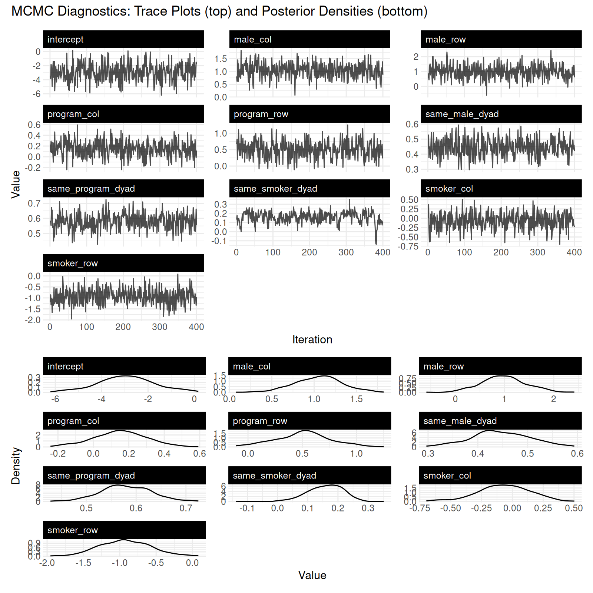
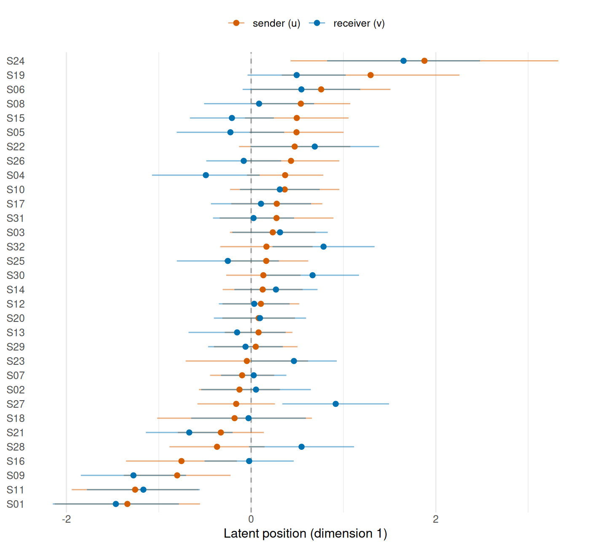
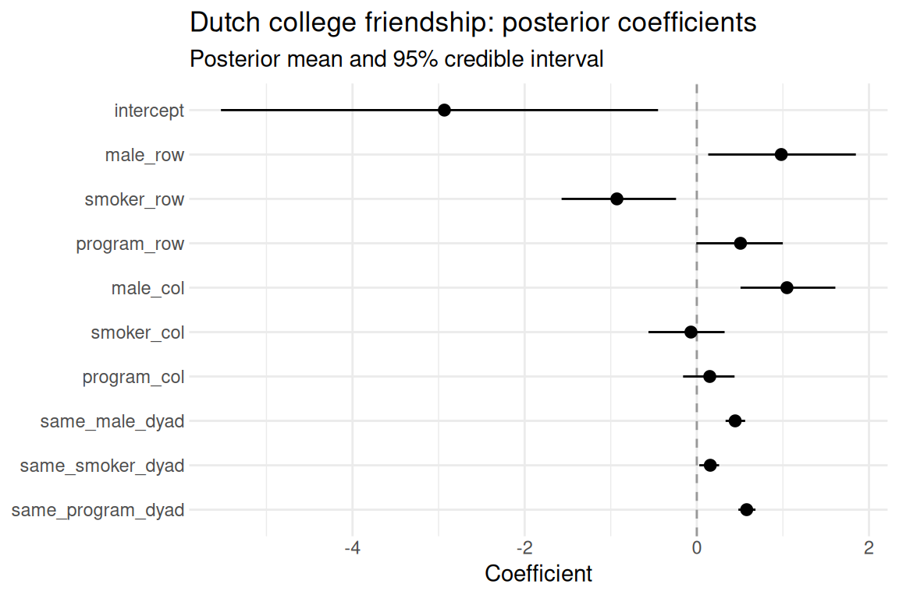
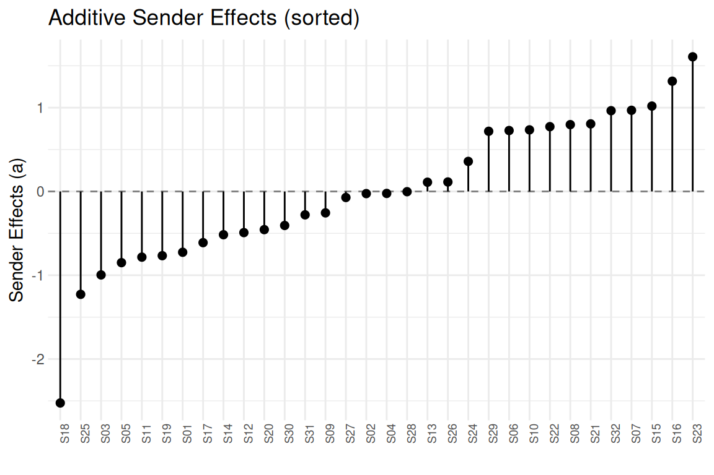

lame Overview
Cassy Dorff, Shahryar Minhas, and Tosin Salau
2026-07-12
Source:vignettes/lame-overview.Rmd
lame-overview.RmdPackage Overview
The lame package provides tools for fitting
Longitudinal Additive and
Multiplicative Effects models to
network data observed over time. If you study relationships between
actors (countries trading with each other, legislators co-sponsoring
bills, students forming friendships across semesters) and you have
repeated observations of those relationships, lame is
designed for you.
The modeling approach builds on the Additive and Multiplicative
Effects (AME) framework developed by Peter Hoff, whose amen package
provides the foundational cross-sectional implementation.
lame extends that framework with:
- Longitudinal data: panel networks observed across multiple time periods, potentially with actors entering and leaving the sample.
-
Dynamic effects: latent positions and baseline
activity levels can evolve via AR(1) processes (
dynamic_uvanddynamic_ab). - C++ acceleration: core sampling routines in Rcpp/RcppArmadillo.
- Bipartite networks: two-mode networks (e.g., countries and treaties) with separate latent spaces for row and column nodes.
-
ggplot2-based diagnostics:
trace_plot,gof_plot,ab_plot, anduv_plotreturn standard ggplot2 figures you can theme and extend. -
Standard S3 methods:
coef(),confint(),fitted(),residuals(),predict(), andsimulate()work as you would expect from any R model object.
The package works with netify for
data preparation.
Migrating from amen
Both amen and lame export an
ame() function; if both packages are attached, a startup
message reminds you that unqualified ame(...) calls
dispatch to whichever was attached last, so write
lame::ame(...) to be explicit. Old amen
scripts largely run unchanged – the most common porting fix is
family = "nrm" becoming family = "normal" (the
short forms are accepted as aliases, with a message), and
print = is deprecated in favour of verbose =.
The full mapping of argument and output differences lives in the
Migration from amen sections of ?ame and
?lame.
Application: Dutch College Friendships
To see how lame works in practice, we analyze the
Dutch college friendship network (van de Bunt, van
Duijn, and Snijders 1999), a panel of 32 students who arrived as
strangers and rated each other’s friendship at seven time points. (We
drop the cold-start first wave, when the students barely knew each other
and almost no ties exist; six waves remain.) The substantive question is
whether students sort by gender, smoking status, and academic program,
and whether residual clustering remains once those covariates are
absorbed.
The dataset includes:
-
Y: directed friendship ratings on a -1 to 4 scale
(-1 a negative/troubled relationship, 0 no or uncertain tie, 1-4
increasing friendship). We binarize any positive rating to a tie
(
(Y > 0) * 1), so the rare -1 ratings fold in with 0 as “no tie”. -
X: three node-level attributes:
male,smoker,program. - We construct three dyadic homophily indicators from
the node attributes:
same_male,same_smoker,same_program.
library(lame)
library(ggplot2)
set.seed(6886)
data("dutchcollege")
n <- nrow(dutchcollege$Y)
T_all <- dim(dutchcollege$Y)[3]
actor_names <- sprintf("S%02d", seq_len(n))
# binarize and drop the cold-start wave (t = 1 has almost no ties)
Y <- lapply(2:T_all, function(t) {
Yt <- (dutchcollege$Y[, , t] > 0) * 1
diag(Yt) <- NA
rownames(Yt) <- colnames(Yt) <- actor_names
Yt
})
names(Y) <- paste0("t", 2:T_all)
# nodal covariates passed identically as sender and receiver
X_node <- dutchcollege$X
rownames(X_node) <- actor_names
Xrow <- lapply(seq_along(Y), function(t) X_node)
Xcol <- Xrow
# dyadic homophily indicators
same_male <- outer(X_node[, "male"], X_node[, "male"], "==") * 1
same_smoker <- outer(X_node[, "smoker"], X_node[, "smoker"], "==") * 1
same_program <- outer(X_node[, "program"], X_node[, "program"], "==") * 1
Xdyad_one <- array(0, dim = c(n, n, 3),
dimnames = list(actor_names, actor_names,
c("same_male", "same_smoker", "same_program")))
Xdyad_one[, , 1] <- same_male
Xdyad_one[, , 2] <- same_smoker
Xdyad_one[, , 3] <- same_program
Xdyad <- lapply(seq_along(Y), function(t) Xdyad_one)The friendship network’s average density rises across the panel as students settle in, though the trajectory is not monotone (density bounces between roughly 0.40 and 0.63 across the six waves):
sapply(Y, function(y) round(mean(y, na.rm = TRUE), 2))
#> t2 t3 t4 t5 t6 t7
#> 0.40 0.52 0.47 0.49 0.63 0.51Fitting the Model
We fit a binary probit AME model with sender random effects
(rvar), receiver random effects (cvar), dyadic
correlation (dcor), and a one-dimensional latent space
(R = 1). The random effects capture sender heterogeneity
(some students simply nominate more friends) and receiver heterogeneity
(some students are nominated more often), while the latent space picks
up residual clustering: students who befriend similar people for reasons
the observed covariates do not capture. (Why R = 1 and not
2? See the Latent Space section below.)
fit <- lame(
Y = Y,
Xdyad = Xdyad, # dyadic homophily indicators
Xrow = Xrow, # sender covariates
Xcol = Xcol, # receiver covariates
family = "binary", # binary probit model
rvar = TRUE, # sender random effects
cvar = TRUE, # receiver random effects
dcor = TRUE, # dyadic correlation (reciprocity)
R = 1, # 1-D multiplicative latent space
symmetric = FALSE, # friendships are directed
burn = 500, # burn-in
nscan = 4000, # post-burn-in iterations
odens = 10, # thinning -> 400 stored draws
posterior_opts = list(save_UV = TRUE), # keep U/V draws: gives
# latent_positions() real
# posterior SDs below
save_log_lik = TRUE, # pointwise log-lik: feeds loo() at the end
verbose = FALSE,
plot = FALSE
)Interpreting the Results
summary(fit)
#>
#> === Longitudinal AME Model Summary ===
#>
#> Call:
#> [1] "Y ~ dyad(same_male, same_smoker, same_program) + row(male, smoker, program) + col(male, smoker, program) + a[i] + b[j] + rho*e[ji] + U[i,1:1] %*% V[j,1:1], family = 'binary'"
#>
#> Time periods: 6
#> Family: binary
#> Mode: unipartite
#>
#> Note: STATIC fit pooled across 6 time periods --
#> U, V, a, b are time-invariant; per-period predictions vary
#> only through per-period covariates. For time-varying effects,
#> refit with dynamic_uv = TRUE and/or dynamic_ab = TRUE.
#>
#> Regression coefficients:
#> ------------------------
#> Estimate StdError z_value p_value CI_lower CI_upper
#> intercept -2.933 1.221 -2.401 0.016 -5.528 -0.45 *
#> male_row 0.981 0.451 2.178 0.029 0.133 1.848 *
#> smoker_row -0.928 0.344 -2.696 0.007 -1.571 -0.241 **
#> program_row 0.508 0.251 2.021 0.043 -0.006 0.999 *
#> male_col 1.047 0.28 3.74 0 0.508 1.61 ***
#> smoker_col -0.068 0.213 -0.319 0.749 -0.562 0.323
#> program_col 0.15 0.149 1.013 0.311 -0.16 0.438
#> same_male_dyad 0.446 0.058 7.64 0 0.334 0.561 ***
#> same_smoker_dyad 0.157 0.061 2.551 0.011 0.029 0.259 *
#> same_program_dyad 0.579 0.051 11.362 0 0.483 0.682 ***
#> ---
#> Signif. codes: 0 '***' 0.001 '**' 0.01 '*' 0.05 '.' 0.1 ' ' 1
#> Note: stars are a visual hint from posterior mean / SD only; for inference use the credible intervals.
#>
#> Variance components:
#> -------------------
#> Estimate StdError
#> va 0.822 0.200
#> cab 0.292 0.097
#> vb 0.301 0.079
#> rho 0.325 0.039
#> ve 1.000 0.000
#> (va = sender, cab = sender-receiver covariance, vb = receiver,
#> rho = dyadic correlation, ve = residual variance)A lot lands at once, so let’s walk through it.
Intercept. The probit intercept is the latent linear
predictor when every covariate is zero. The covariates here are
uncentered (program is coded 2-4 and is never zero), so
that corner sits well outside the observed data; the familiar
qnorm(density) rule of thumb instead describes the
predictor at the average covariate profile. The two reconcile
once you add back the mean covariate contribution:
bhat <- colMeans(fit$BETA)
slice_means <- apply(fit$X[[1]], 3, mean, na.rm = TRUE) # mean of each design column
centroid_lp <- sum(bhat * slice_means[names(bhat)]) # predictor at the average profile
c(intercept = unname(bhat["intercept"]),
centroid_lp = centroid_lp,
qnorm_density = qnorm(mean(unlist(Y), na.rm = TRUE)))
#> intercept centroid_lp qnorm_density
#> -2.93256660 -0.06887191 0.00842291The intercept itself is strongly negative, but the predictor at the
average covariate profile (centroid_lp) sits close to
qnorm(density) – the uncentered covariates account for
nearly the entire gap. The intercept absorbs the mean covariate
contribution; it is not a baseline probability. Center the covariates if
you want it to read as one, and read predicted probabilities off
predict(fit, type = "response").
Homophily. The three dyadic coefficients
(same_male, same_smoker,
same_program) measure whether students of the same type are
more likely to be friends, holding the sender, receiver, and latent
positions fixed. Positive values mean homophily; credible intervals that
exclude zero indicate that the direction of the association is
well-identified. Program homophily tends to be the strongest of the
three, consistent with students bonding around shared coursework.
Nodal covariates. male_row /
male_col measure whether male students are unusually active
senders or popular receivers, and similarly for smoker and
program. With only 32 students, the credible intervals on
individual nodal effects are wide; treat the sign as suggestive, the
magnitude with caution.
Variance components. va (sender
variance) and vb (receiver variance) quantify how much
students differ in sociability and popularity beyond what the covariates
explain. The dyadic correlation rho captures reciprocity;
in friendship networks rho > 0 is the rule rather than
the exception.
Checking Convergence
The model is estimated via MCMC, so convergence checks come first.
trace_plot shows the sampled values over iterations (top
panels) and the corresponding posterior densities (bottom panels) for
each parameter.
trace_plot(fit, params = "beta")
Trace plots should bounce around a stable mean without long-term trends or sticky regions, and density plots should be smooth and unimodal. Numerically, common MCMC checks are split- < 1.01 for monitored parameters and bulk / tail ESS 400 per chain.
With 400 stored samples, the regression coefficients mix well at this
seed. The variance components mix more slowly than the regression
coefficients – compare their
and ESS columns in the summarise_draws table below. Which
parameter mixes worst is seed-dependent in a short chain, so treat this
fit as a compact worked example rather than a final diagnostic run.
Bayesian-ecosystem diagnostics:
posterior::as_draws()
lame registers as_draws() methods so any
fit drops straight into the Stan-era diagnostic ecosystem
(posterior, bayesplot,
tidybayes): posterior::summarise_draws() gives
per-parameter posterior summaries,
split-,
and bulk / tail ESS in one call.
library(posterior)
#> This is posterior version 1.6.1
#>
#> Attaching package: 'posterior'
#> The following object is masked from 'package:lame':
#>
#> as_draws
#> The following objects are masked from 'package:stats':
#>
#> mad, sd, var
#> The following objects are masked from 'package:base':
#>
#> %in%, match
draws <- posterior::as_draws(fit) # draws_array [iter, chain, var]
posterior::summarise_draws(draws) # rhat, ess_bulk, ess_tail per param
#> # A tibble: 15 × 10
#> variable mean median sd mad q5 q95 rhat ess_bulk
#> <chr> <dbl> <dbl> <dbl> <dbl> <dbl> <dbl> <dbl> <dbl>
#> 1 intercept -2.93 -2.94 1.22 1.19 -5.04 -0.842 1.000 319.
#> 2 male_row 0.981 0.980 0.451 0.416 0.235 1.75 0.999 458.
#> 3 smoker_row -0.928 -0.939 0.344 0.372 -1.49 -0.347 0.998 392.
#> 4 program_row 0.508 0.517 0.251 0.228 0.0784 0.938 0.998 293.
#> 5 male_col 1.05 1.06 0.280 0.261 0.581 1.51 1.00 387.
#> 6 smoker_col -0.0681 -0.0677 0.213 0.208 -0.432 0.278 0.998 429.
#> 7 program_col 0.150 0.147 0.149 0.144 -0.112 0.399 1.01 367.
#> 8 same_male_dyad 0.446 0.442 0.0583 0.0567 0.345 0.543 1.01 362.
#> 9 same_smoker_dyad 0.157 0.163 0.0614 0.0619 0.0533 0.242 1.00 94.7
#> 10 same_program_dy… 0.579 0.577 0.0510 0.0520 0.497 0.664 1.00 319.
#> 11 va 0.822 0.783 0.200 0.177 0.558 1.19 0.998 311.
#> 12 cab 0.292 0.278 0.0972 0.0972 0.165 0.463 1.00 257.
#> 13 vb 0.301 0.293 0.0793 0.0712 0.187 0.444 1.00 206.
#> 14 rho 0.325 0.325 0.0395 0.0346 0.263 0.386 0.999 169.
#> 15 ve 1 1 0 0 1 1 NA NA
#> # ℹ 1 more variable: ess_tail <dbl>A single-chain fit like this one has chain = 1, so
reduces to within-chain
split-;
for
across independently initialised chains, see the multi-chain section in
the dynamic-effects vignette.
Goodness of Fit
The gof_plot function compares observed network
statistics to their posterior predictive distributions: can the model
reproduce emergent structural features like degree heterogeneity,
transitivity, and reciprocity, not just the dyad-level
relationships?
gof_plot(fit)![Longitudinal goodness-of-fit panels for the Dutch college fit: each facet plots one network statistic (Sender Degree Heterogeneity, Receiver Degree Heterogeneity, Dyadic Dependence, Triadic Dependence, Transitivity) across the six time periods. The observed series is a solid orange line with filled orange points; the posterior-predictive median is a dashed dark line; the 95 percent credible interval is a grey ribbon. The three elements differ on both colour and linetype, so the comparison survives grayscale printing and colour-blind viewing. Observed series falling outside the band flag structural features the model is missing.](lame-overview_files/figure-html/overview-gof-1.png)
For a longitudinal model, gof_plot shows these
statistics across time, encoding three series per panel with colour and
linetype redundantly: the observed series is a solid orange line
with filled orange points, the posterior-predictive
median is a dashed dark line, and the 95% credible
interval is a grey ribbon (width set by
credible.level). Observed values inside the ribbon are
features the model reproduces; values outside flag structure it is
missing – itself a substantive finding, not a failure to report.
Reading the figure: the fit reproduces the cyclic-triad structure (Triadic Dependence sits inside the band at five of the six periods) but under-predicts sender degree heterogeneity (observed above the band at five of six periods) and transitivity (above the band at every period) – some students nominate many more friends than the additive plus latent can absorb, and triangle closure is systematically too low. Receiver heterogeneity and Dyadic Dependence (reciprocity) drift in and out of the band across the panel.
This is the standard signature of a latent-space model on a
friendship network. AME assumes conditional dyadic independence, so
triangle closure must be soaked up by clustering of the latent
positions; ERGMs model it directly via terms like gwesp.
The two classes are complementary: ERGM for triangle-closure questions,
AME for stable, non-degenerate estimates with explicit actor
heterogeneity and a coherent posterior to forecast or simulate from.
Posterior-predictive temporal-trend test:
gof_temporal()
The figure read above is qualitative. gof_temporal()
gives a scalar check on the temporal trend in a chosen
statistic: it fits an OLS slope to the observed per-period series,
recomputes that slope in posterior-predictive replicate panels drawn via
simulate(fit), and returns a two-sided posterior-predictive
p-value – near 0 when the observed slope is unreachable under the model,
well away from 0 when it is central in the predictive distribution.
# density rises across the panel on net (the network gets denser as
# students settle in, though the trajectory is not monotone), so it is the
# natural temporal-trend target.
gt_density <- gof_temporal(fit, stat = "density", n_rep = 100, seed = 6886)
gt_density # prints stat, observed slope, n_rep, and the p_pp
#>
#> ── Temporal-trend posterior-predictive check ──
#>
#> • Statistic: "density"
#> • Observed slope (per-period): 0.025
#> • Replicates: 100
#> • Posterior-predictive p-value (two-sided): 0
#> Observed temporal trend is incompatible with the fitted model.A p_pp of 0 says the static fit cannot reproduce the
empirical net densification slope (about +0.025 per period in our run) –
the expected diagnostic for a model whose parameters are constant across
periods, and consistent with the per-period mass shift in
gof_plot(). dynamic_beta or time-varying
covariates are the remedy; see the Dynamic Effects vignette.
Latent Space
The multiplicative effects capture association patterns beyond what
the covariates and additive effects explain. We fit R = 1,
so each student’s sender position
()
and receiver position
()
is a single number – and a one-dimensional space should be
plotted as one dimension (a 2-D scatter of a 1-D space piles
every point onto a line and looks degenerate even when the positions are
informative). Why not just fit R = 2? On these 32 students
the second latent dimension competes with the three homophily dummies
for the same signal: refitting with R = 2 collapses the
same_male and same_smoker effective sample
sizes to about 15, versus healthy mixing at R = 1.
The honest display for a 1-D space is a ranked dot plot: every
student’s sender and receiver position with a 95% interval, ordered by
sender position. The intervals come from the saved U/V draws
(posterior_opts = list(save_UV = TRUE) in the fit
above).
lp1 <- subset(latent_positions(fit), dimension == 1)
ordv <- with(subset(lp1, type == "U"), actor[order(value)])
lp1$actor <- factor(lp1$actor, levels = ordv)
ggplot(lp1, aes(x = value, y = actor, color = type)) +
geom_vline(xintercept = 0, linetype = 2, color = "grey60") +
geom_errorbar(aes(xmin = value - 2 * posterior_sd,
xmax = value + 2 * posterior_sd),
width = 0, alpha = 0.5, orientation = "y") +
geom_point(size = 1.8) +
scale_color_manual(values = c(U = "#D55E00", V = "#0072B2"),
labels = c(U = "sender (u)", V = "receiver (v)")) +
labs(x = "Latent position (dimension 1)", y = NULL, color = NULL) +
theme_bw() +
theme(panel.border = element_blank(), panel.grid.major.y = element_blank(),
axis.ticks = element_blank(), legend.position = "top")
Three things to read off this plot. First, the dimension is genuinely
informative: the extremes (around
at the top versus
at the bottom) are separated by roughly six times the width of a typical
95% interval, so the ordering is signal, not noise. Second, sender and
receiver positions are strongly related (their correlation is about
0.7): students near the top both seek out and attract the same
friendship cluster. Third, the exceptions are the interesting actors –
students whose blue and orange points diverge are attractive to a
cluster they do not themselves reach toward (or vice versa), a pattern
no covariate in the model encodes. These static positions are pooled
across all six waves; if you suspect students moved through
this space as the year progressed, that is what
dynamic_uv = TRUE estimates (see the dynamic effects vignette).
Extracting Latent Positions
If you need the estimated latent positions in a tidy format (for
custom plots, merging with external data, or exporting to other tools),
the latent_positions() function returns a data frame:
lp <- latent_positions(fit)
head(lp)
#> actor dimension time value posterior_sd type
#> 1 S01 1 1 -1.3401201 0.3935684 U
#> 2 S02 1 1 -0.1262753 0.2194996 U
#> 3 S03 1 1 0.2343257 0.2317540 U
#> 4 S04 1 1 0.3682777 0.2064248 U
#> 5 S05 1 1 0.4914147 0.2548563 U
#> 6 S06 1 1 0.7583521 0.3749826 UEach row gives one actor’s position on one latent dimension at one
time point, with a type column distinguishing the sender
position ("U") from the receiver position
("V"). The posterior_sd column is populated
because the fit saved its U/V draws
(posterior_opts = list(save_UV = TRUE)); without that
option it is NA with a one-time message telling you how to
refit. A static fit returns a single slice (labelled
time = 1) that applies to every period; dynamic fits
(dynamic_uv = TRUE) return each time point separately, and
procrustes_align() removes the arbitrary per-period
rotations so that trajectories across time are interpretable (see the dynamic effects vignette).
Tidy-data round-trip via netify
lame uses the netify package for tidy
network data: build a netify object from an edgelist and pass it
directly to lame() or ame(). On the way out,
tidy(), autoplot(), and
prediction_draws_long() give you
broom-/ggplot-/marginaleffects-ready output.
Entry: tidy edgelist → lame()
library(netify)
# a tidy edgelist is often how network data arrives. Here we melt the
# Dutch-college wave list back into one (from, to, year, tie) row per
# ordered dyad, carrying a dyadic covariate along for the ride.
edges_long <- do.call(rbind, lapply(seq_along(Y), function(t) {
Yt <- Y[[t]]
idx <- which(!is.na(Yt), arr.ind = TRUE)
data.frame(
from = rownames(Yt)[idx[, 1]],
to = colnames(Yt)[idx[, 2]],
year = names(Y)[t],
tie = as.integer(Yt[idx]),
same_program = Xdyad[[t]][, , "same_program"][idx]
)
}))
head(edges_long)
#> from to year tie same_program
#> 1 S02 S01 t2 0 0
#> 2 S03 S01 t2 0 0
#> 3 S04 S01 t2 0 0
#> 4 S05 S01 t2 0 0
#> 5 S06 S01 t2 0 0
#> 6 S07 S01 t2 1 0
netlet <- netify::netify(
edges_long,
actor1 = "from", actor2 = "to", time = "year",
weight = "tie", dyad_vars = "same_program",
symmetric = FALSE, mode = "unipartite",
missing_to_zero = FALSE,
output_format = "longit_array"
)
# a netify object drops straight into lame(); reduced iterations here so the
# vignette builds quickly (use burn >= 500, nscan >= 4000 for real analyses).
fit_netlet <- lame(
netlet,
family = "binary", R = 1,
burn = 50, nscan = 200, odens = 5,
verbose = FALSE
)
# to inspect what lame() will see, to_lame() returns the pieces directly
pieces <- netify::to_lame(netlet, lame = TRUE)
names(pieces)
#> [1] "Y" "Xdyad" "Xrow" "Xcol" "mode"
#> [6] "family" "ame_call" "fit_method" "bootstrap"fit_netlet is a live fit taken straight off the netify
object – no reshaping, no hand-built lists – and
names(pieces) shows the inputs lame() actually
consumes (Y, Xdyad, Xrow,
Xcol, plus the mode / family
metadata netify carries). The payoff is the alignment:
netify() rebuilt, for every period, a tie matrix and a
covariate slice keyed to the same actor order – exactly the
rownames-and-array() bookkeeping done by hand
in the setup chunk at the top of this vignette. When your data arrives
as an edgelist, as panel network data usually does, the edgelist is the
only object you touch.
Exit: tidy(), autoplot(),
prediction_draws_long()
The rest of the round-trip runs against the fit object
built from the Dutch-college data above:
# tidy(fit) -> term / estimate / std.error / statistic / p.value /
# conf.low / conf.high; one row per coefficient (or per
# coefficient x period for dynamic_beta fits). The generic ships with
# lame so this runs without broom installed; when broom is on the path
# `broom::tidy(fit)` dispatches to the same method via
# generics::tidy registration.
tidy(fit)
#> # A tibble: 10 × 7
#> term estimate std.error statistic p.value conf.low conf.high
#> <chr> <dbl> <dbl> <dbl> <dbl> <dbl> <dbl>
#> 1 intercept -2.93 1.22 -2.40 1.64e- 2 -5.53 -0.450
#> 2 male_row 0.981 0.451 2.18 2.94e- 2 0.133 1.85
#> 3 smoker_row -0.928 0.344 -2.70 7.02e- 3 -1.57 -0.241
#> 4 program_row 0.508 0.251 2.02 4.33e- 2 -0.00595 0.999
#> 5 male_col 1.05 0.280 3.74 1.84e- 4 0.508 1.61
#> 6 smoker_col -0.0681 0.213 -0.319 7.49e- 1 -0.562 0.323
#> 7 program_col 0.150 0.149 1.01 3.11e- 1 -0.160 0.438
#> 8 same_male_dyad 0.446 0.0583 7.64 2.18e-14 0.334 0.561
#> 9 same_smoker_dyad 0.157 0.0614 2.55 1.07e- 2 0.0289 0.259
#> 10 same_program_dyad 0.579 0.0510 11.4 0 0.483 0.682Coefficient tables: glance() + tidy()
-> modelsummary / gt /
kableExtra
Because tidy() and glance() are registered
against their generics counterparts, any broom-aware table
package consumes a lame fit directly – most compactly
modelsummary::modelsummary(fit):
# glance() returns the one-row model summary modelsummary uses for its
# lower panel: nobs, n_actors, n_periods, n_stored, family, mode, R,
# dynamic_uv / dynamic_ab / dynamic_beta, elpd_loo (NA unless save_log_lik=TRUE).
broom::glance(fit)
#> # A tibble: 1 × 13
#> nobs n_actors n_row_actors n_col_actors n_periods n_stored family mode R
#> <int> <int> <int> <int> <int> <int> <chr> <chr> <int>
#> 1 5952 32 NA NA 6 400 binary unip… 1
#> # ℹ 4 more variables: dynamic_uv <lgl>, dynamic_ab <lgl>, dynamic_beta <lgl>,
#> # elpd_loo <dbl>
# pass the fit straight to modelsummary -- tidy() drives the upper
# (coefficients) panel, glance() drives the lower (GOF) panel.
modelsummary::modelsummary(
list("Dutch college" = fit),
statistic = "conf.int",
gof_map = c("nobs", "n_actors", "n_periods", "n_stored",
"family", "R", "dynamic_uv", "dynamic_ab")
)| Dutch college | |
|---|---|
| intercept | -2.933 |
| [-5.528, -0.450] | |
| male_row | 0.981 |
| [0.133, 1.848] | |
| smoker_row | -0.928 |
| [-1.571, -0.241] | |
| program_row | 0.508 |
| [-0.006, 0.999] | |
| male_col | 1.047 |
| [0.508, 1.610] | |
| smoker_col | -0.068 |
| [-0.562, 0.323] | |
| program_col | 0.150 |
| [-0.160, 0.438] | |
| same_male_dyad | 0.446 |
| [0.334, 0.561] | |
| same_smoker_dyad | 0.157 |
| [0.029, 0.259] | |
| same_program_dyad | 0.579 |
| [0.483, 0.682] | |
| Num.Obs. | 5952 |
| n_actors | 32 |
| n_periods | 6 |
| n_stored | 400 |
| family | binary |
| R | 1 |
| dynamic_uv | FALSE |
| dynamic_ab | FALSE |
Multiple fits compose into a side-by-side table via a named list, one
column per fit. Below we compare the full specification against a
no-latent-space variant (R = 0):
fit_noUV <- lame(
Y = Y, Xdyad = Xdyad, Xrow = Xrow, Xcol = Xcol,
family = "binary", rvar = TRUE, cvar = TRUE, dcor = TRUE,
R = 0, # no latent space
symmetric = FALSE,
burn = 500, nscan = 4000, odens = 10,
save_log_lik = TRUE, # reused by loo_compare() below
verbose = FALSE, plot = FALSE
)
modelsummary::modelsummary(
list("AME (R = 1)" = fit, "Additive only (R = 0)" = fit_noUV),
statistic = "conf.int",
gof_map = c("nobs", "n_actors", "n_periods", "n_stored",
"family", "R", "dynamic_uv", "dynamic_ab")
)| AME (R = 1) | Additive only (R = 0) | |
|---|---|---|
| intercept | -2.933 | -2.706 |
| [-5.528, -0.450] | [-5.290, -0.289] | |
| male_row | 0.981 | 0.920 |
| [0.133, 1.848] | [0.096, 1.771] | |
| smoker_row | -0.928 | -0.834 |
| [-1.571, -0.241] | [-1.516, -0.107] | |
| program_row | 0.508 | 0.479 |
| [-0.006, 0.999] | [0.031, 1.038] | |
| male_col | 1.047 | 0.986 |
| [0.508, 1.610] | [0.429, 1.497] | |
| smoker_col | -0.068 | -0.094 |
| [-0.562, 0.323] | [-0.515, 0.344] | |
| program_col | 0.150 | 0.117 |
| [-0.160, 0.438] | [-0.187, 0.408] | |
| same_male_dyad | 0.446 | 0.418 |
| [0.334, 0.561] | [0.320, 0.527] | |
| same_smoker_dyad | 0.157 | 0.189 |
| [0.029, 0.259] | [0.097, 0.269] | |
| same_program_dyad | 0.579 | 0.595 |
| [0.483, 0.682] | [0.496, 0.687] | |
| Num.Obs. | 5952 | 5952 |
| n_actors | 32 | 32 |
| n_periods | 6 | 6 |
| n_stored | 400 | 400 |
| family | binary | binary |
| R | 1 | 0 |
| dynamic_uv | FALSE | FALSE |
| dynamic_ab | FALSE | FALSE |
Reading down the two columns shows how a latent space can
redistribute signal: when residual clustering is real, homophily
coefficients move toward zero in the AME column because structure that
was loaded onto same_program (etc.) is instead absorbed by
the latent positions. On this small panel the movement is modest, with
widely overlapping credible intervals – the direction is what to look
for, not the exact shift.
# autoplot.lame returns a horizontal coefplot for static fits and a
# ribbon-per-period for dynamic_beta fits, so the same call works for
# both. ggplot layers compose on top.
autoplot(fit) +
ggtitle("Dutch college friendship: posterior coefficients")
The coefplot is the visual form of the tidy(fit) table
above: the three homophily terms sit clearly right of the dashed zero
line – same_program largest (0.58), same_male
next (0.45), same_smoker smallest (0.16) but still clear of
zero – while the nodal terms are mixed, with smoker_col and
program_col straddling the line. The same generic
dispatches on which = "uv" (latent positions – the ranked
dot plot in the Latent Space section above) and
which = "ab" (sender / receiver random effects):
# which = "ab" delegates to ab_plot() (sender side by default; use
# ab_plot(fit, effect = "receiver") for the column side). Each lollipop
# is a student's sender random effect a_i: the longest positive stems
# are students who nominate far more friends than their covariates
# predict -- the heterogeneity that va summarises as one number.
autoplot(fit, which = "ab")
# prediction_draws_long() returns a long-format data frame with
# .chain / .iteration / .draw / period / period_label / i / j /
# actor_i / actor_j / .value -- ready for tidybayes / marginaleffects.
pdl <- prediction_draws_long(fit, type = "response", n_draws = 50)
# the diagonal (i == j) is a self-tie, undefined in a friendship network, but
# the linear predictor is still numerically defined there -- drop it so the
# frame covers only real (off-diagonal) pairs.
pdl <- pdl[pdl$i != pdl$j, ]
head(pdl, 3)
#> # A tibble: 3 × 10
#> .chain .iteration .draw period period_label i j actor_i actor_j
#> <int> <int> <int> <int> <chr> <int> <int> <chr> <chr>
#> 1 1 1 1 1 t2 2 1 S02 S01
#> 2 1 1 1 1 t2 3 1 S03 S01
#> 3 1 1 1 1 t2 4 1 S04 S01
#> # ℹ 1 more variable: .value <dbl>
dim(pdl)
#> [1] 297600 10Because the .chain / .iteration /
.draw / .value columns follow the
tidybayes / marginaleffects convention, this
frame composes directly with ggdist,
tidybayes, and marginaleffects – no reshaping
step needed.
Model comparison: loo::loo_compare() as a
one-liner
Does the latent space earn its keep over additive effects alone? The
standard out-of-sample yardstick is the expected log pointwise
predictive density (elpd_loo) from loo::loo(),
which requires save_log_lik = TRUE at fit time; the
mechanics (and the
Pareto-
diagnostics to read before trusting any elpd number) are
covered in Your First AME Model. Both
fits above already carry the pointwise log-likelihood, so
loo::loo_compare() ranks them in one call:
# both fits already carry save_log_lik = TRUE, so this reuses them -- no
# refitting. Pass a NAMED list so the rows are labelled by model rather
# than model1/model2.
cmp <- loo::loo_compare(list(no_latent = loo::loo(fit_noUV),
latent_R1 = loo::loo(fit)))
cmp
#> elpd_diff se_diff
#> latent_R1 0.0 0.0
#> no_latent -134.3 15.7How to read the output. The top row is the preferred
model (elpd_diff = 0); each subsequent row reports the elpd
difference relative to it, with a standard error. Here
latent_R1 is preferred, beating no_latent by
about 134.3 elpd units (SE 15.7); a ratio of
|elpd_diff|/se_diff near or above 2 is a reasonably
confident preference, so the latent space is doing real predictive work
on this network. When |elpd_diff| is instead close to its
SE, the simpler model is the defensible choice.
This result sits comfortably beside the earlier
modelsummary table, where the R = 1 and
R = 0 coefficient columns were nearly identical. The two
are not in tension: the latent space barely moves
yet buys roughly 134.3 elpd units out of sample, because
the predictive gain is carried by the estimated latent positions
themselves – the
term in the linear predictor. Residual dyadic structure shows up in
held-out predictive density long before it shows up in a coefficient
table.
Reproducibility: sessionInfo() and
renv.lock
An analysis a reviewer (or your future self) can reproduce records the seed and the package versions it was fit under. The pattern:
fit <- lame(..., seed = 6886) # the sampler seed lives in lame()
saveRDS(list(fit = fit, session = sessionInfo()),
file = "lame_fit_replication.rds")For long-term reproducibility, commit an renv.lock so
reviewers can recreate the toolchain with renv::restore().
This vignette’s own session record:
sessionInfo()
#> R version 4.3.3 (2024-02-29)
#> Platform: x86_64-pc-linux-gnu (64-bit)
#> Running under: Ubuntu 24.04.3 LTS
#>
#> Matrix products: default
#> BLAS: /usr/lib/x86_64-linux-gnu/blas/libblas.so.3.12.0
#> LAPACK: /usr/lib/x86_64-linux-gnu/lapack/liblapack.so.3.12.0
#>
#> locale:
#> [1] LC_CTYPE=C.UTF-8 LC_NUMERIC=C LC_TIME=C.UTF-8
#> [4] LC_COLLATE=C.UTF-8 LC_MONETARY=C.UTF-8 LC_MESSAGES=C.UTF-8
#> [7] LC_PAPER=C.UTF-8 LC_NAME=C LC_ADDRESS=C
#> [10] LC_TELEPHONE=C LC_MEASUREMENT=C.UTF-8 LC_IDENTIFICATION=C
#>
#> time zone: America/New_York
#> tzcode source: system (glibc)
#>
#> attached base packages:
#> [1] stats graphics grDevices utils datasets methods base
#>
#> other attached packages:
#> [1] netify_1.5.3 posterior_1.6.1 ggplot2_4.0.3 lame_1.3.1
#>
#> loaded via a namespace (and not attached):
#> [1] gtable_0.3.6 tensorA_0.36.2.1 bayestestR_0.17.0
#> [4] xfun_0.55 bslib_0.9.0 htmlwidgets_1.6.4
#> [7] insight_1.5.0 ggrepel_0.9.6 lattice_0.22-5
#> [10] vctrs_0.7.3 tools_4.3.3 generics_0.1.4
#> [13] datawizard_1.3.1 parallel_4.3.3 tibble_3.3.1
#> [16] pkgconfig_2.0.3 tinytable_0.16.0 data.table_1.18.0
#> [19] checkmate_2.3.4 ggnewscale_0.5.2 RColorBrewer_1.1-3
#> [22] S7_0.2.2 desc_1.4.3 distributional_0.6.0
#> [25] lifecycle_1.0.5 compiler_4.3.3 farver_2.1.2
#> [28] textshaping_1.0.4 codetools_0.2-19 litedown_0.9
#> [31] htmltools_0.5.9 sass_0.4.10 yaml_2.3.12
#> [34] pillar_1.11.1 pkgdown_2.2.0 jquerylib_0.1.4
#> [37] tidyr_1.3.2 cachem_1.1.0 abind_1.4-8
#> [40] parallelly_1.46.1 network_1.20.0 tidyselect_1.2.1
#> [43] digest_0.6.39 performance_0.16.0 future_1.69.0
#> [46] listenv_0.10.0 dplyr_1.2.1 purrr_1.2.2
#> [49] labeling_0.4.3 fastmap_1.2.0 grid_4.3.3
#> [52] cli_3.6.6 magrittr_2.0.5 patchwork_1.3.2
#> [55] loo_2.9.0 utf8_1.2.6 broom_1.0.11
#> [58] future.apply_1.20.2 withr_3.0.2 scales_1.4.0
#> [61] backports_1.5.0 rmarkdown_2.30 matrixStats_1.5.0
#> [64] globals_0.19.0 igraph_2.2.2 otel_0.2.0
#> [67] modelsummary_2.6.0 ragg_1.5.0 coda_0.19-4.1
#> [70] evaluate_1.0.5 knitr_1.51 parameters_0.28.3
#> [73] rlang_1.2.0 Rcpp_1.1.1-1.1 glue_1.8.1
#> [76] jsonlite_2.0.0 R6_2.6.1 statnet.common_4.13.0
#> [79] tables_0.9.33 systemfonts_1.3.1 fs_1.6.6What’s Next?
This vignette covered the core workflow: fitting, convergence, GOF, and visualization. For more specialized topics:
- Single networks (no time series)? See Your First AME Model for a detailed cross-sectional walkthrough
- Two types of nodes? See Bipartite Networks
- Evolving network structure? See Dynamic Effects
- Just want the quick version? See Getting Started
References:
Hoff, PD (2021) Additive and Multiplicative Effects Network Models. Statistical Science 36, 34–50.
van de Bunt, G. G., van Duijn, M. A. J., & Snijders, T. A. B. (1999). Friendship networks through time: An actor-oriented dynamic statistical network model. Computational & Mathematical Organization Theory, 5(2), 167–192.
Minhas, S., Dorff, C., Gallop, M. B., Foster, M., Liu, H., Tellez, J., & Ward, M. D. (2022). Taking dyads seriously. Political Science Research and Methods, 10(4), 703–721. doi:10.1017/psrm.2021.56